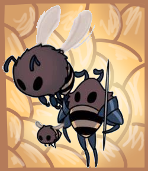

(Nome: Yara Viviane Oliveira Nascimento. 9A) Sistema de Abelhas
O sistema de Abelhas são constítuidos por uma abelha rainha e outros sendo operários da rainha que são os mesmos que fazem o mel.
A única fêmea das comeias é a Rainha por ela consegue se reproduzir com os operários e assim tiver filhos e colocar em um casulo específico que os operários fazem.
Exemplos das Abelhas
A diferença das abelhas é a Rainha.


O motivos das suas diferenças
A Abelha Rainha é maior em relação de seus operários e ela que a mais importante na classe de sociedade das abelhas, já que são elas que se reproduzem com os machos que faz a colmeia ainda existi.
As abelhas machos, ou seja, os operários são que dão base para a abelha rainha ficar e construir a colmeia e fazer o famoso Mel que é tanto comercializado. As abelhas são territórialistas com as suas colmeias ao ponto se aparecer uma abelha de outra colmeia na deles, eles matam.
O maior predadores das abelhas (que convenhamos que é muito fácil delas morrerem) são as vespas grandem que invadem seus ninhos, mata as abelhas e roubam a pupas e larvas e levam para os seus próprios ninhos.